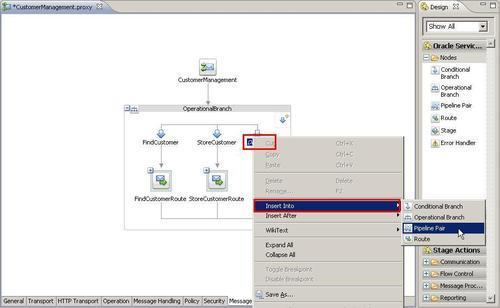
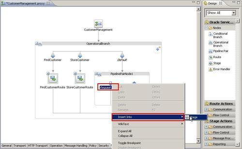

So far we have used the drag-and-drop feature for adding nodes and actions to the message flow of a proxy service. However, there is also a more developer-friendly approach, where we don't have to know where in the palette a given item is and especially which items are allowed in a given context.
You can import the OSB project containing the base setup for this recipe into Eclipse OEPE from \chapter2\getting-ready\using-context-menu-to-add-nodes-actions.
Navigate to the Message Flow tab and perform the following steps:


The context-sensitive menu helps in choosing the right element at a given place in the message flow. There is an Insert Into and an Insert After menu, the first inserting the element into the element that holds the focus and the second one adding it after the one holding the focus.
This is very helpful, especially for a beginner, because this way we no longer have to exactly know which elements are allowed at a given place in the message flow. If using the drag-and-drop feature, the drop will not be possible for a certain action or node, if it's not allowed in the given context. Only those elements that are valid at the given context can be chosen.